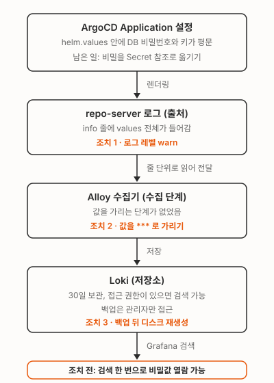

로그 저장소 Loki에 비밀값이 남아 있는지 점검하다가 DB 비밀번호가 평문으로 검색되는 걸 봤어요. 찍은 쪽은 ArgoCD의 repo-server(Application 설정을 받아 배포 파일로 렌더링하는 구성요소)였어요. Application은 무엇을 어디에 배포할지 적는 ArgoCD 설정 단위예요. 그 설정의 helm.values에 적어 둔 값이 info 로그에 통째로 들어가 있었어요. 로그 레벨을 내리고, 로그를 모아 Loki로 보내는 수집기 Alloy에서 값을 가리고, 디스크를 백업한 뒤 새로 만들어서 Loki에서 검색되는 평문을 0건으로 만들었어요.

위 그림이 비밀값이 지나온 길이에요. 위에서 아래로 Application 설정, repo-server 로그, 수집기 Alloy, 저장소 Loki 순서예요. 주황색 글씨가 손댄 지점이고, 맨 아래 상자는 손대기 전 상태예요.
Loki에서 DB 비밀번호가 검색됐어요
Loki에 비밀번호 키 이름을 검색했더니 결과가 나왔어요. info 줄은 이런 모양이었어요(값은 가짜로 바꾸고 줄여서 적었어요).
level=info msg="manifest cache hit: &ApplicationSource{RepoURL:...,Path:...,TargetRevision:main,Helm:&ApplicationSourceHelm{ValueFiles:[],Parameters:[]HelmParameter{},ReleaseName:,Values:db_password: not-a-real-value\n...repo-server는 같은 설정을 다시 렌더링하지 않으려고 결과를 캐시에 두는데, 그 캐시에 맞았는지를 남기는 로그예요. 그런데 Values: 뒤에 helm.values(헬름 차트에 넘기는 값)가 그대로 붙어 있어요. 우리는 몇몇 Application의 helm.values에 DB 비밀번호와 클라우드 키를 평문으로 적어 두고 있었어요. 그 값이 그대로 로그가 된 거예요. 어디까지 찍히고 있는지 먼저 봤어요.
| 확인한 것 | 사실 |
|---|---|
| 1 | 발견 직후 운영 클러스터의 repo-server부터 warn으로 내렸고, 그 뒤 info 줄은 더 안 찍혔어요 |
| 2 | 개발 클러스터는 아직 info 레벨이라, 클라우드 액세스 키 모양의 문자열이 든 줄이 하루 1,453줄씩 찍히고 있었어요 |
| 3 | 운영 클러스터를 warn으로 내린 뒤에도 warning 줄에서 Redis 비밀번호가 나왔어요 |
수집기 Alloy에는 값을 가리는 블록이 없었어요. Loki 보존 기간은 30일이었어요. 그러니까 지난 30일치 평문이 Loki 조회 화면인 Grafana에 접근할 수 있는 누구에게나 보이는 상태였어요.
왜 이렇게 됐나
비밀값이 Application 설정 안에 있다는 게 출발점이에요. ArgoCD는 캐시에 맞았는지 볼 때 Application의 source 설정 전체를 쓰고, 그때 로그에도 그 설정을 그대로 문자열로 찍어요. helm.values가 그 안에 있어서 값이 같이 찍혀요. 위 로그 예시의 Values: 자리가 그 자리예요.
그 뒤는 평범한 로그 파이프라인이에요. Alloy가 파드 로그를 줄 단위로 읽어 Loki에 보내고, Loki는 30일 동안 보관하고, Grafana가 검색창을 열어 줘요. 어느 단계도 “이 줄에 비밀이 있는지”를 묻지 않아요.
무엇을 바꿨나
먼저 더 싼 방법 둘을 따져 봤어요.
- 로그 레벨만 낮추면 되지 않나. 부족해요.
manifest cache hit과miss는 info지만, 캐시 조회나 저장이 실패했을 때 남기는manifest cache error와set error는 warning 레벨이고 같은 설정을 찍어요. 운영 클러스터를 warn으로 내린 뒤에 나온 Redis 비밀번호 줄이 바로 그 경로였어요. - 아예 error 로그만 수집하면 되지 않나. 기각했어요. 이 출처는 막히지만 운영 로그를 통째로 잃어요. 그리고 다른 앱이 비밀을 로그에 찍는 건 로그 레벨과 상관없어서, 수집기에 가리는 블록이 없으면 그 줄도 똑같이 Loki에 남아요. 30일 보존이 끝나길 기다리는 것도 아니었어요. 그동안은 검색 한 번이면 값이 보이니까요.
그래서 출처, 수집기, 저장소를 각각 손봤어요. 개발과 운영 두 클러스터에 같은 순서로 적용했어요.
출처: repo-server 로그 레벨을 warn으로. ArgoCD 헬름 차트 값이고, argocd-cmd-params-cm ConfigMap으로 들어가요. 바꾼 뒤 repo-server를 재시작해야 반영돼요.
configs:
# ...
params:
# ...
reposerver.log.level: warn수집기: Alloy에서 Loki로 보내기 전에 값을 가리기. Alloy 설정은 읽기(loki.source.kubernetes) → 처리(loki.process) → 쓰기(loki.write) 블록으로 이어지고, forward_to가 다음 블록을 가리켜요. 읽기와 쓰기 사이에 처리 블록을 하나 끼우고, 정규식 치환(stage.replace)으로 값 부분만 ***로 바꿔요. expression의 캡처 그룹 ( ) 안만 치환되고 키 이름은 남아요. 클라우드 키, 키=값, Bearer 토큰, PEM(개인키 파일 형식) 패턴을 각각 규칙으로 뒀고, 아래는 그중 Bearer 토큰 하나예요.
loki.source.kubernetes "pods" {
targets = discovery.relabel.pod_logs.output
forward_to = [loki.process.redact.receiver]
}
// ...
loki.process "redact" {
forward_to = [loki.write.default.receiver]
// ...
stage.replace {
expression = `(?i)\b(?:bearer|basic)\s+([A-Za-z0-9._~+/=-]{16,})`
replace = "***"
}
// ...
}키=값 규칙은 키 이름 바로 뒤에 :나 =가 와야 잡히게 했어요. URL 경로의 /client-secret 같은 단어까지 가리면 운영 로그가 망가지거든요.
한계도 있어요. 줄 단위로 읽기 때문에 여러 줄로 쪼개진 PEM은 한 번에 못 가려요. 헤더 줄과 64자짜리 본문 줄을 가리는 규칙을 따로 뒀고, 그래도 끝 줄은 남아요.
저장소: 백업 뒤 디스크를 새로 만들기. Loki의 삭제 API로 줄을 골라 지우는 대신 디스크를 통째로 바꿨어요. 아직 못 찾은 비밀이 다른 앱 로그에 있어도 같이 사라지고, 어떤 줄을 지웠는지 따질 일이 없어요. 과거 로그는 먼저 블록 볼륨 백업으로 떠 뒀어요. 평문이 들어 있는 백업이라 관리자만 접근할 수 있게 두고, 필요할 때만 복원해요.
Loki는 StatefulSet(디스크를 붙여 쓰는 파드 묶음)이에요. persistentVolumeClaimRetentionPolicy.whenScaled가 Delete면 replicas를 0으로 내릴 때 디스크 요청 객체(PVC)가 같이 지워져요. 다시 1로 올리면 빈 디스크로 떠요. 먼저 이 값부터 봤어요. Retain이면 아래 명령으로는 데이터가 안 지워져요. PV의 persistentVolumeReclaimPolicy(보통 StorageClass 값을 물려받아요)가 Retain이면 PVC가 지워져도 평문이 든 볼륨이 남으니 그것도 봤어요. 둘 다 Delete였어요.
kubectl -n <namespace> get sts loki -o jsonpath='{.spec.persistentVolumeClaimRetentionPolicy}'
kubectl get pv -o custom-columns=NAME:.metadata.name,RECLAIM:.spec.persistentVolumeReclaimPolicy,CLAIM:.spec.claimRef.name백업 상태가 완료로 바뀐 걸 확인한 뒤에 실행했어요.
kubectl -n <namespace> scale sts loki --replicas=0
kubectl -n <namespace> wait --for=delete pod/loki-0 --timeout=300s
kubectl -n <namespace> wait --for=delete pvc/storage-loki-0 --timeout=300s
kubectl -n <namespace> scale sts loki --replicas=1그동안 Loki 조회와 알림 룰이 멈춰요. 다시 뜬 뒤 룰이 로드됐는지 같이 봤어요.
고쳐졌는지 확인한 것
- 로그 레벨을 내린 뒤 repo-server 로그를 다시 봤어요. 운영 클러스터는 재시작 뒤로, 개발 클러스터는 전환 직후로 봤고 둘 다 한 줄도 없었어요. Loki에서
{namespace="argocd"} |= "ApplicationSource{"로 찾아도 0건이에요. - 가짜 비밀을 담은 줄을 일회성 파드에서 로그로 찍고 Loki에서 찾아봤어요. 값은
***로 바뀌었고, 원문으로 검색하면 0건이에요. 같은 시간 일반 로그는 계속 들어왔어요. - 디스크를 새로 만든 뒤 재생성 이전 구간 조회는 0건이고, 옛 볼륨은 삭제됐고, 새 로그가 들어오고, 알림 룰이 다시 로드됐어요.
로그에 찍혀 있던 값들은 따로 교체하고 있어요. 일부는 끝났고 일부는 진행 중이에요. 로그를 지웠다고 노출이 없던 일이 되지는 않아요.
남은 일
비밀값이 Application 설정에 들어 있는 한 로그 레벨과 정규식은 뒷단 방어예요. 지금은 그 값들을 Kubernetes Secret으로 옮기고 Application에는 참조만 남기는 작업을 하고 있어요. ArgoCD와 Loki를 같이 쓰고 있다면 Application에 비밀이 직접 적혀 있는지부터 보면 돼요.
kubectl get applications.argoproj.io -A -o yaml | grep -nE '^\s+(values|valuesObject|parameters):'